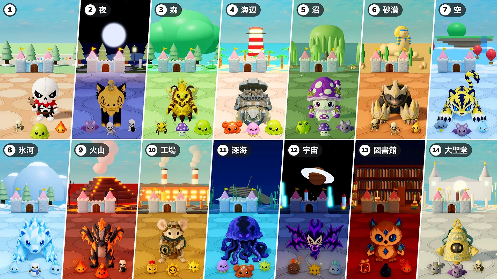

お知らせ
パッチノートMonChexx パッチノート：お城の保護 · 「いっしょに遊ぶ」の順位 · 不具合の修正パッチノートMonChexx パッチノート：お城の修理 · ステータス強化 · 演出 · パッド操作パッチノートMonChexx パッチノート：ステータス強化 · ステージ表示 · 記録

パッチノートMonChexx パッチノート：ステージ · 2倍速 · 召喚物パッチノートMonChexx パッチノート：アイテム抽選 · 特殊抽選 · ボス登場 · スコアパッチノートMonChexx パッチノート：自動進行 · 増えるボス · ボスのHPバー · スコア · ほのおの旗パッチノートMonChexx パッチノート：マナの泉 · ジャンプでスター拾い · アビゼルのロール変更パッチノートMonChexx パッチノート：アイテムドロップと等級 · お墓 · セレニスの調整パッチノートMonChexx パッチノート：ロールの見直しとロール特性コンテンツアップデートシーズン2 · 新モード：お城まもりパッチノートMonChexx パッチノート：スキルの攻撃判定パッチノートMonChexx パッチノート：攻撃判定 · スキルパワーパッチノートMonChexx パッチノート：ロビー · 図鑑パッチノートMonChexx パッチノート：チクタクギアの刷新 · 構えの演出パッチノートMonChexx パッチノート：コロガメの調整 · 利便性の向上 · 不具合の修正パッチノートMonChexx パッチノート：ぬいぐるみ5体の調整パッチノートMonChexx Patch Notes: Battle Tempo & Skillsコンテンツアップデートシーズン1 · アップデート02：進化の波動パッチノートMonChexx パッチノート：バランス調整 · 戦闘システム